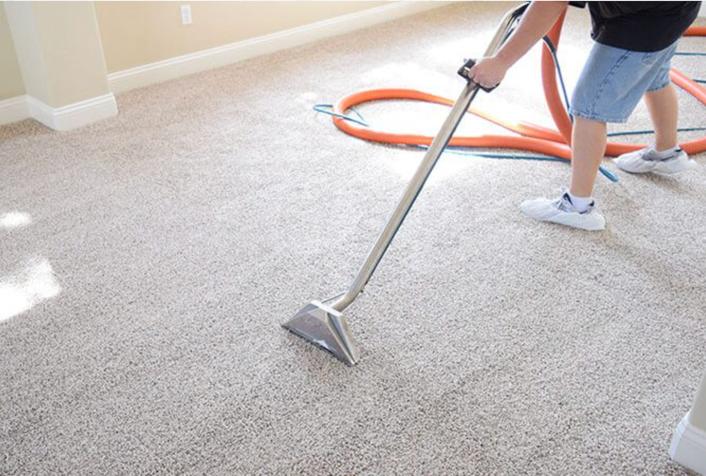
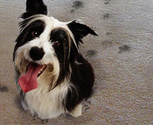
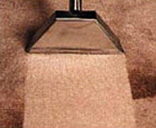

Dirt and soil are easily seen on a hard surface and can wipe off easily, but on carpet it can soon work its way deep into the fibers where the abrasive action will cause them to deteriorate and need replacing prematurely.

Our cleaning system deep cleans your carpets and upholstery, flushing dirt and pollutants from the fibers using self-neutralizing chemicals that are non-toxic and biodegradable. We use only hypoallergenic, child- and pet-safe solutions on every job.
Pet odors and stains require more than surface cleaning. We locate the source of the odor, treat it with enzyme-based solutions that neutralize it at the fiber level, and leave your carpet fresh and residue-free.

We apply Scotchgard® to your carpeting, rugs, and upholstered furniture. It creates an invisible barrier that resists dirt and stains, keeps routine cleaning more effective, and extends the life of your carpet.

Most homes benefit from professional cleaning every 12 to 18 months. Homes with pets, children, or allergy sufferers should consider every 6 to 12 months. High-traffic areas like hallways and living rooms may need more frequent attention.
Yes. We use non-toxic, hypoallergenic, biodegradable cleaning solutions that are completely safe for children and pets. No harsh chemicals or harmful residues are left behind.
Most individual rooms take 20 to 30 minutes. A typical whole-home cleaning takes 2 to 4 hours depending on the size and condition of the carpets.
We recommend 2 to 4 hours before light foot traffic, and 6 to 12 hours for carpets to be fully dry. Opening windows or running a fan speeds drying significantly.
Yes. We use enzyme-based treatments that neutralize pet odors at the source rather than masking them. We identify urine hotspots and treat them directly for lasting freshness.
Providing safe, deep-clean upholstery care across Central Pennsylvania, including Harrisburg, York, Lancaster, Lebanon, and Hershey.
Mon - Fri: 8am - 7pm
Saturday: 10am - 5pm
Sunday: 10am - 3pm
Serving Central Pennsylvania, including Harrisburg, York, Lancaster, Lebanon, and Hershey
(717) 454-7347
bearcarpetcarepa@gmail.com
© 2026
Bear Carpet Care. All Rights Reserved.
Designed by HTML Codex. Edited & Maintained by
WebEaze.